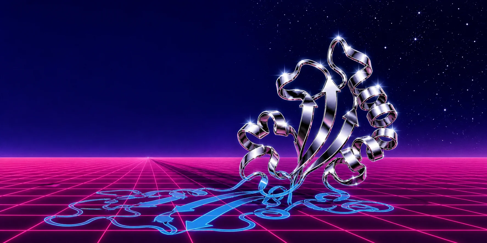
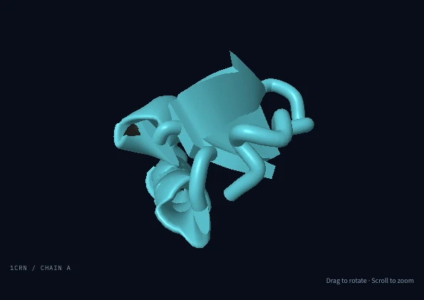

Codex
Register the repository as a marketplace, then add the plugin.
codex plugin marketplace add \
https://github.com/jvogan/stereofold
codex plugin add stereofold@stereofold
Molecular viewer plugin
Stereofold is a plugin for Claude Code, Claude Science, and Codex. The agent opens a protein structure in a WebXR headset browser and changes it when you ask: a new color, highlighted residues, or another structure.
01 Browser demo
This demo runs in your browser with no install, agent, or headset. Rotate crambin, switch between cartoon and ball-and-stick, and select a residue in the sequence or the 3D view. With the plugin, the agent makes changes like these when you ask.

Loads on request. Drag to rotate; scroll to zoom.
TTCCPSIVARSNFNVCRLPGTPEAICATYTGCIIIPGATCPGDYAN
Keyboard: use Tab to reach the sequence, then arrow keys to move between residues. Press Enter to select. In the 3D view, arrow keys rotate and + / − zoom.
02 Desktop stereo
Without a headset, the plugin’s stereo viewer shows depth on an ordinary screen. It renders a separate image for each eye, and the viewing mode sets how the two images appear.
03 Install the plugin
The plugin runs on your Mac, inside the agent host you already use. It needs Node.js 22 or newer. The built server is committed to the repository, so there is no build step.
Register the repository as a marketplace, then add the plugin.
codex plugin marketplace add \
https://github.com/jvogan/stereofold
codex plugin add stereofold@stereofoldAdd the marketplace, then install the plugin by name.
claude plugin marketplace add jvogan/stereofold
claude plugin install stereofold@stereofold
For Claude Science, add a local-command connector in Settings using Node
and plugin/dist/server.mjs. Install skills through
Settings → Skills. The README covers paths and sandbox permissions.
In any host, start
a new conversation after installing and ask: “Inspect PDB 1CRN in
Stereofold.”
For lesson files alone, copy the complete
plugin/skills/molecular-presentation/ folder into your
host’s skill directory. Claude Code reads .claude/skills/
or ~/.claude/skills/; Claude Science supports skill upload
and GitHub import. The Node 22 planner needs no viewer or server.
Live desktop chapters use Molecular Structure Viewer; headset playback
uses the Stereofold plugin.
04 With the plugin
Ask for a PDB ID or local mmCIF file; obtain AlphaFold coordinates through your source tools when needed. A compatible MCP Apps host can show an inspection panel. If your host has no panel or its card does not mount, ask to open the same inspector in a browser. Confirm the rendered scene in your actual connection. Ask the agent to recolor chains, highlight residues, or start a guided tour. A separate stereo viewer shows depth on your screen.
Compare the stereo modes
Claude Science: (1) From the clone root in a Mac terminal, run
node plugin/dist/headset-host.mjs 4HHB for Quest, or
add --vision-pro for Vision Pro. (2) Pair the headset
as the terminal directs; keep the terminal and browser tab open.
(3) Ask Claude Science to join the Stereofold scene on this Mac
and change it. It calls continue_session. See the
README’s Claude Science setup.
In Claude Code or Codex, ask: “Open this structure on my Quest.” Your Mac opens Meta’s Web Launch page in a browser signed in to the headset’s Meta account. Press Open there. With both devices on the same Wi-Fi, Quest Browser loads the structure from your Mac, with no developer mode or USB cable. Accept the certificate warning for your Mac’s address and tap Enter VR. Then keep asking in the conversation, by typing or dictating; the assistant checks that each change renders on the headset. Physical Quest 2 observations inform its performance limits; other models use capability checks and actual frame times.
In Claude Code or Codex on Apple Vision Pro, ask: “Open this structure on my Vision Pro.” Your Mac prepares a one-time Safari link. Universal Clipboard is optional. The visionOS simulator exercised opaque VR and pinch controls; verify physical Vision Pro behavior on the current device.
Other headset browsers use the private HTTPS address and pairing dialog. The companion probes WebXR modes and input sources, prefers passthrough when available, and falls back to opaque VR. A missing launch shortcut leaves manual pairing available.
Try it in your browser